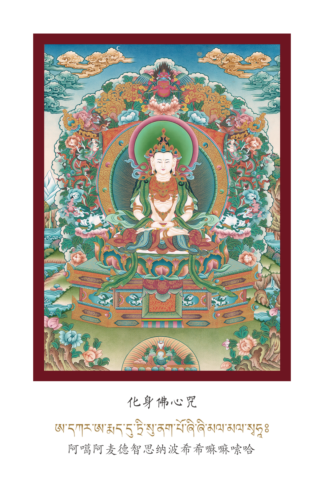
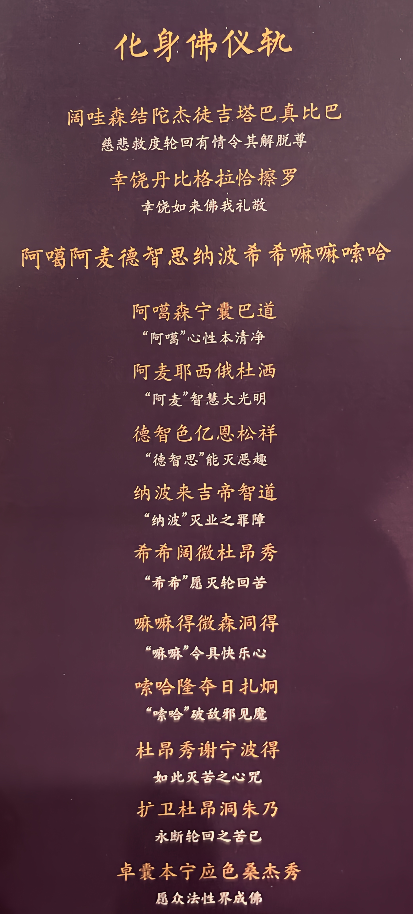

人生是苦的，苦的根源是执着和自我。离苦得乐，需要突破执着和自我。
我和我的一切都是心的产物。我们了解的一切来自于我们的心，而不是我们来自于一切。
我们不是迷失在一切中，而是迷失在自我中。一通万通——一个明白了就都明白了。
"大" — 世间一切都是你心的幻化
"圆满" — 众生本具圆满
纯粹的直指人心、明心见性的教法，通过你自己的方式通达你。
降服其心的方式：在生活里修炼。生活是最好的修炼场所，是有勇气的人学的。
1. 消业障 — 清除累世业力与烦恼
2. 观想无量光佛 — 获得佛的无限能量与加持
3. 空性的学习 — 体悟心性本清净
| 禅垫 | 铺设禅垫，端坐其上 |
|---|---|
| 供品 | 点一柱香、点一盏灯、供一些花 |
| 环境 | 干净整洁，有仪式感；清除旁边拖鞋等杂物 |
| 朝向 | 面朝通透宽阔的方向，无干扰 |
朝向参考：
| 早上 | 朝东 |
| 白天 | 朝南 |
| 傍晚 | 朝西（最佳修法时段） |
| 通用 | 往空间最大的方向 |
| 最少时长 | 不少于 20 分钟 |
|---|---|
| 建议时长 | 30 - 60 分钟为宜 |
| 最少次数 | 每人至少修满 49 次 |
内心悲伤、无助时
莫名其妙卡住了的时候
莫名其妙生病的时候
念诵上师祈请颂三遍。这是对传承的祈祷，目的是对即将修的法升起更大的信心。
念诵四皈依三遍。这是对上师三宝的信任与祈祷。
由合掌改为禅定手印，念诵发心文三遍。
念诵 「啊 嗡 吽」 三遍、五遍或七遍不等。发菩提心——为众生修这个法，为当下和我一样受苦的人。
身体放松，清空大脑，安静地待一会儿。自然的禅定。
睁开眼睛，同时发 「啊」 三遍。
无量光佛 — 一切诸佛之尊。
变成无量光佛的一瞬间，开始念 仪轨前两句（化身佛礼赞）+ 化身佛心咒，多遍持诵。

这是整个修法最核心的阶段，包含四个层次：
在无量光佛面前，坦然、深层、诚恳地做忏悔，反思过患。
过患：自己的错误，给自己以及他人带来的伤害。有意无意的，直接间接的，过去无尽轮回中的过患。
无量光佛心轮中出现「啊」字，成千上万的「啊」字围绕向内旋转（左转）。转的过程中继续忏悔，佛的光和暖更强。
「啊」字渐变为白色甘露水（似牛奶），源源不断从佛心轮流出，像泉水一样：
甘露填满身体全部，无量光佛的爱与慈悲填满你的身体。毛孔打开——
像布袋装满水一样开始溢出，全身毛孔打开，所有脏东西涌出：
冒黑烟、冒黑气（水蒸气般）→ 浓血（变黄、变白）、黑血 → 脓、瘤 → 蜘蛛、螃蟹、青蛙、蝎子、蜈蚣、蛆等。从手脚指甲也在不断流出。
流得越来越多，大地无法承载，瞬间裂开。
（18层 — 虚词，代表很深很深。师父建议多流一会儿，别急着开裂。）
18层下面有无数的生命 — 冤亲债主，有些长着三个头、五个头，有些有许多头，头上有许多的嘴巴，不断呐喊你的名字。
身体流出的脏东西瞬间全部到他们嘴里。他们都吃饱了，满足了，呐喊停止。大地合上。
整个世界和身心变得清净轻松，身体仿佛一个特别脏的玻璃杯被洗净。在这种清净状态中多呆一会儿。
世界清净了，气息无比干净、通透。无量光佛心轮中出现五颜六色的光，像演唱会灯光打在身上的感觉，照在五轮之上：
身体每一处都被佛加持，圆满获得智慧慈悲加持。
自身瞬间变成无量光佛的样子 — 在功德、智慧、慈悲上没有任何区别，平等无二，殊胜庄严。
自己心轮中出现「啊」字，成千上万个「啊」字围绕旋转。这些「啊」字变成五颜六色的光，从心轮向外照射。
光普照在亲朋好友身上，无量众生也同样收到五彩光的普照。光和咒语弥漫整个空间，铺满整个宇宙和虚空。
天下认识和不认识的人，都变成了无量光佛。
所有众生都收到无量光佛的心轮中。
观想的无量光佛从顶轮进入，经过喉轮、心轮，在心轮处与自己合二为一。
恢复空灵。从有相观想回归无相空性。
安静纯然地安住一会儿。让刚才整个观想的体验沉淀，不思维、不造作，纯然地待在空灵中。
从空性安住中出定，念诵仪轨后段释义偈颂（阿噶森宁囊巴道...至卓囊本宁应色桑杰秀），以文字确认并封印整个修法的成果。然后念回向文，将修法功德回向一切众生。
前 4 步 = 升起信仰 + 发心（合掌 → 禅定手印）
第 5-6 步 = 禅定 + 化现佛身
第 7-8 步 = 持咒 + 核心观想（忏悔、净化、化身、普照）— 念仪轨前两句 + 心咒
第 9-10 步 = 合一 + 安住空性（无言、纯然）
第 11 步 = 念仪轨后段偈颂 + 回向文（确认封印 + 回向功德）

化身佛修法仪轨 — 可跟随持诵